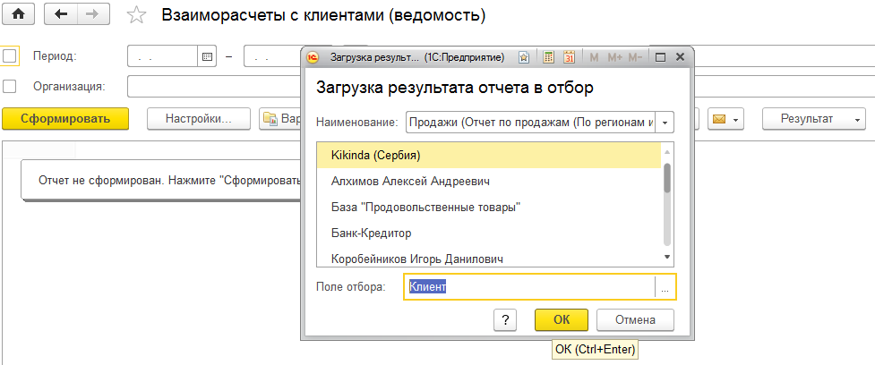
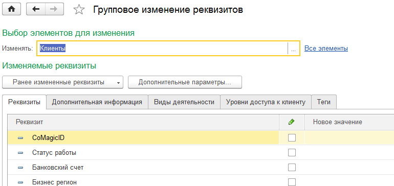
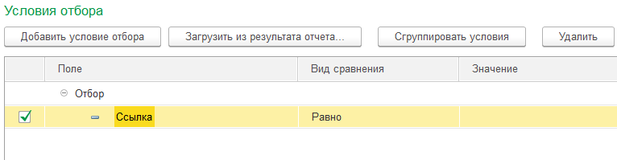
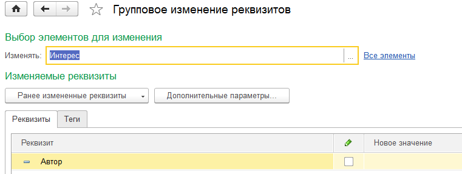
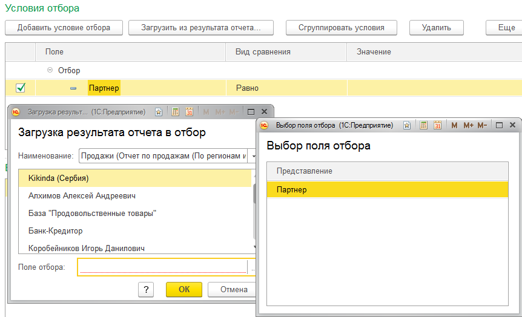

1. Сохранение результата отчета
2. Использование сохраненного результата отчета
2.1. Загрузка сохраненного результата в отбор в другом отчете
В поле отбора выбираем реквизит по которому хотим загрузить отбор.



Результаты отчета загрузились в отбор «Клиент»
2.2. Загрузка результата в отбор в обработке группового изменения реквизитов

Переходим к отбору (Все элементы), добавляем условие отбора «Ссылка»

Загружаем сохраненный результат отчета

Результат отчета загружен в отбор

Так же можно отобрать другие данные по реквизиту (Например: Интересы по клиенту)

